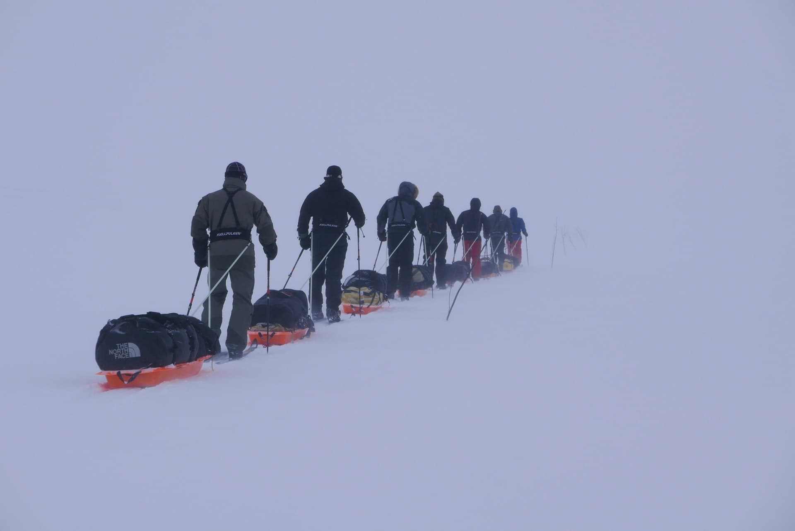

Se você é do tipo pé no chão e gosta de trilhar por ai, essa é a melhor opção.
Já pensou
Já pensou
em acampar
no gelo?
Acredite essa experiência é única, sentir alguns graus negativos por vários dias consecutivos não é uma tarefa muito fácil, se você gosta de desafios esse pacote é ideal para você.
Trilha
Caminhadas por vulcões, pinguins, baleias, icebergs gigantes e glaciares que ultrapassam séculos parece mais uma aventura que uma viagem. A Antártida tem todas as características possíveis para riscar a palavra comum de sua definição.
- ❄️Exploração das cavernas congeladas.
- ❄️ Visita a uma base de estudos científicos.
- ❄️Passeios entre colônias de pinguins-imperador.
- ❄️ Cada missão leva 12 pessoas por 5 a 10 dias.
- ❄️ Incluso: Café da Manhã, Almoço, Janta e Água.
- Obs:Para outros tipos de bebidas será cobrado taxa extra.
